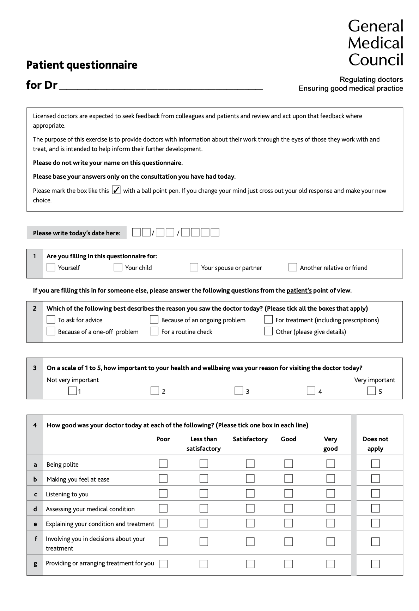
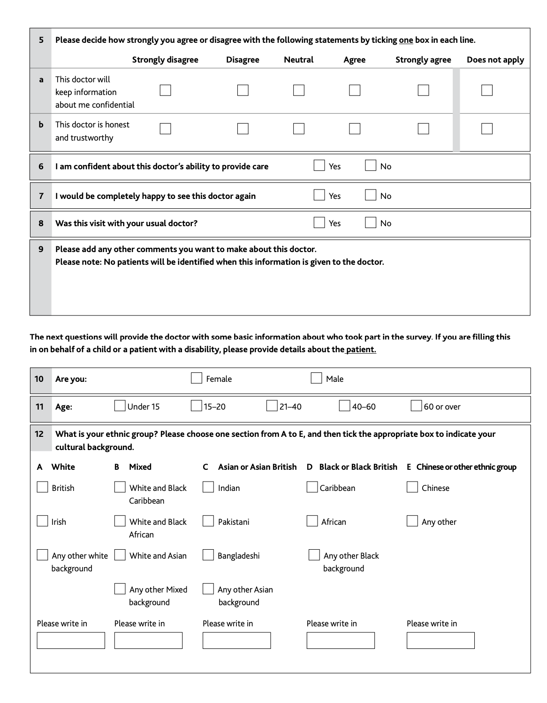

Unit 6 - Questionnaire Design
Wiki Activity
NHS Feedback Questionnaire
The questionnaire I have reviewed is a patient feedback survey from the General Medical Council. These types of surveys are often used within the NHS following both doctors and hospital appointments to gain feedback on the patients experience to ensure good medical practice.
The questionnaire uses predominantly closed questions to keep the answers concise and from a predetermined list of answers. The questionnaire is split into 2 sections, questions 1 to 9 is specific around the patients experience and then questions 10 to 12 are to gather statistical data around who the survey was about.
The use of the closed questions allows the NHS to collate a large amount of data than can be consolidated with other responses for an overall view of the feedback. This is beneficial when a large volume of responses are expected and can ensure this data can be easily converted into quantitative information. However, as demonstrated in question 2, an ‘other’ box is given due to them being unable to list every possible scenario for response to this question. The use of ‘other’ allows them to still gather the information of any anomalies whilst also collating the responses for the rest of the options.
Question 3 asks ‘On a scale of 1 to 5, how important to your health and wellbeing was your reason for visiting the doctor today’, whilst this may be important information to gather the question itself will likely gain an overwhelming response of 4s and 5s as it is unlikely for anyone to visit the doctor if they didn’t see it as important to their health and wellbeing therefore this question may be unnecessary.
Question 4 asks for various rankings of the doctors behaviour on a qualitative scale from ‘poor’ to ‘very good’. For this information, the best method of collection has been used as it will ensure all responders answer in a consistent way. However the questions are biased towards positive responses by asking whether the doctor was ‘polite’ and ‘put you at ease’ rather than asking if the doctor was ‘rude’ and made you feel uncomfortable. Questions 5 to 7 follow a similar format of asking for responses to positive assertions. By using a standardised format for these questions they can easily be compared to other questionnaires.
Question 9 is an open question which allows for a free text box of feedback for comments to be made which may fit outside any of the previous questions. However, this information will be difficult to quantify. Common themes would need to be looked for throughout the responses to this question. There is some thought to data privacy in question 9 as the text in this question does assure the responder that no patient names will be provided during the course of feeding back to the doctor. However no further information could be found with this survey as to how the information would be used. Questions 10-12 again use the most effective method of gathering statistical data about a person as this can be converted into quantitative data to understand who has completed the questions.
References
General Medical Council, (n.d). Patient Questionnaire. Available at: https://www.ed.ac.uk/sites/default/files/imports/fileManager/patient_questionnaire%20pdf_48210488.pdf . (Accessed 10th April 2023).

